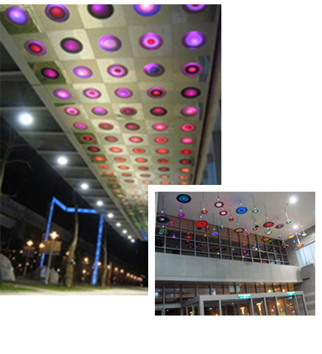
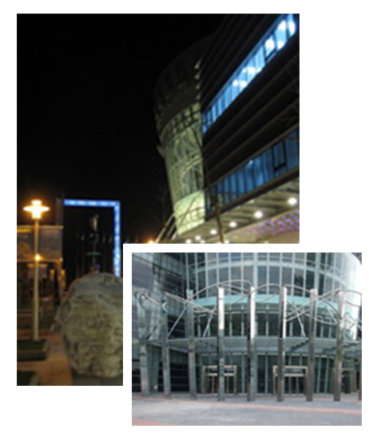
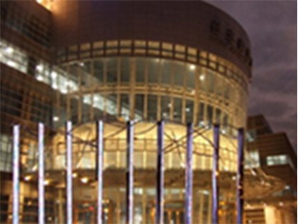
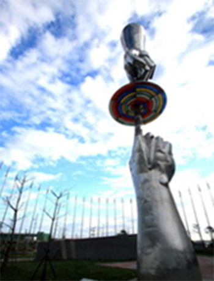

展館介紹
台北南港展覽2館擁有國家級雙層展場、全台獨有多功能活動空間(客製化空間需求) 、三鐵共構之交通優勢
自然的韻律
四季之歌
- 春，喚醒了露珠中沉睡的精靈，如彩蝶翩翩穿梭嫩芽新綠間，搖起片片飛絮漫舞風中。
- 夏雷如雄獅吼出牠的熱情，金色光芒飛奔蔚藍天際，隆隆高歌生命無限。
- 秋風翦翦吹來清涼，翻動詩篇蕭索如落葉沙沙，在水晶般透明的秋氣中。
- 冬之聖堂管風琴合唱起讚美歌，詠嘆生命美好，祈禱聲中似聞嬰兒伊呀，見證了另一個生命的起始。
- 長廊上的彩色玻璃以脈搏般的節奏，伴隨光效的拍子，引導人們用自然的步伐，走過春夏秋冬四季更替的生命之旅。
生命之舞
- 四季默默執著人們的手，心聲流洩如跳躍的音符，譜出曼波韻律。
- 呼應四季時空長廊，七彩斑爛大小不一的圓，有如活躍生命體，由大門處湧入大廳，準備跳一場華麗的圓舞曲。
- 以彩色窯燒玻璃製作的圓，層層重疊出無數七彩光環，高高低低懸吊於天花板。特殊吊掛方法，提供一定程度的波動空間。
- 經由IC電腦控制，所有的圓，能集體構成波紋狀擴散發光，像深海魚類的生物電能，合作構成組織嚴密的韻律，踏踏踏地攜手跳出歡愉的生命之舞。


文明的節奏
思考之間
- 由三角型不鏽鋼柱排成，每邊9公尺的兩只虛實方體，方體間隔遙遙相對，兩方體間以十二個自然形成的紋石排列串聯，巨石經過程度不一的切割貫穿出「虛」的空間，象徵一個念到另一個念之間，有無限的可能。人們在這些空間穿梭巡遊，並思考著文明世界與自然世界的關係。
- 人的思考是追求突破提升層次，而思考不是單向的，一個分叉到另一分叉，永遠有兩種以上的選擇。意念的生滅起落，即無窮盡的時空展延。
- 不鏽鋼柱朝內一面與巨石切割之地面，以強化玻璃內襯光膜造影，內部並以LED排列，在柱身及地面上呈現抽象式表現，時而表現人類文明發展中的符號與快慢的速度，時而又如自然生物般呼吸著。自然表徵的石頭，象徵文明科技源於自然，也將回歸於與自然。

物我無限
- 九在東方是很神奇的數字，九九連環有無限的組合，九九歸一又回到初始的圓滿狀態。物我無限的九根三角柱由大地隆起，象徵人類科學始於自然，自然微笑地托起文明，也安慰人類空虛的心靈。
- 白天在燦爛的陽光下，三角柱的鏡面不鏽鋼反射出周遭環境過往人潮的疊疊幢影；夜晚日落時分，鏡面的電子顯示屏將閃爍起色彩繽紛、帶有人工生命機制的「晶靈」立體互動動畫。
- 在這九根三角柱，設置了高科技互動影像裝置，透過電腦與感應系統，電子顯示屏的「晶靈」會隨著自然界裡的時序與光線而遞變，同時也會與現場觀眾的遠近距離，產生即時的互動變化。科技藝術營造了人與自然的第三類接觸，創造了影像互動的驚奇。無論白晝或黑夜，每分或每秒的演化，亦即時傳播到館內的螢幕屏上，讓館內的觀眾能同步且完整的觀賞到九根三角柱的「晶靈」動畫作品全貌。

天人境界
- 文明得到生命的甘泉，滋養了空洞的靈魂，於是歡欣踏出節奏美妙的步伐。
- 此處裝置了二只巨大的手，一手指地一手朝天，手指相接處，即天人臨界，彩環代表無窮無盡，無限展延。天人界面，可以遠兆億公里隔萬年時空，窮畢生之力而無一厘之寸功。也可碧落黃泉思路無阻無滯，百代千秋神遊太虛彈指而至。
- 以九環相疊之彩色窯燒玻璃，區隔自然的世界與文明的世界。此界面與「思考之間」、「物我無限」等高度，其色彩圓形又與四季之歌生命之舞同節拍，為整個構思詮釋了最佳句點。
- 有人瞬間而頓悟，有人遺響於悲風，答案何其紛紛，惟文明對自然充分理解與協調，文明本身方能展延至無盡。